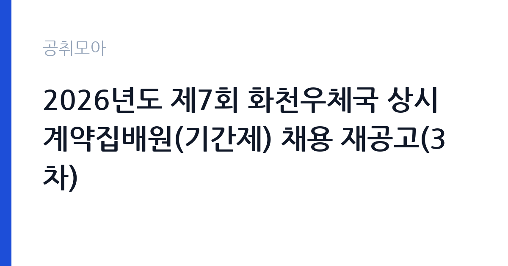

[국가기관] 2026년도 제7회 화천우체국 상시계약집배원(기간제) 채용 재공고(3차)
과학기술정보통신부 우정사업본부 강원지방우정청 화천우체국 · 강원 · 마감 2026-09-29 (D-7) · 출처 나라일터

한눈에 보는 모집 조건
| 기관 | 과학기술정보통신부 우정사업본부 강원지방우정청 화천우체국 |
|---|---|
| 공고명 | 2026년도 제7회 화천우체국 상시계약집배원(기간제) 채용 재공고(3차) |
| 고용형태 | 공무직 |
| 근무지 | 강원 |
| 게시일 | 2026-09-22 |
| 마감일 | 2026-09-29 (D-7) |
지원자격, 이렇게 읽으세요
- 상시계약집배원(기간제) 1명
- 접수 ~2026-09-29 마감
- 세부 조건은 원문 공고문 확인
집배원 채용의 응시 자격은 운전면허 소지가 핵심입니다. 통상 제1종 또는 제2종 보통운전면허와 이륜차 운전 가능 면허를 함께 요구하므로, 세부 자격은 첨부 공고문에서 반드시 확인하시기 바랍니다. 집배 실기시험이 포함되므로 이륜차 운전 숙련도가 필요합니다. 채용 기간이 11월 30일까지로 정해져 있어 해당 기간 근무 가능 여부를 먼저 점검하시기 바랍니다.
이 공고의 포인트
첫 번째 포인트는 3차 재공고라는 점입니다. 앞선 차수에서 지원자가 적어 문이 계속 열려 있는 상태라 합격 가능성이 큽니다. 두 번째로 접수부터 최종합격까지 열흘이라는 초고속 일정이라, 빠르게 일자리를 구하는 분께 좋습니다. 세 번째로 집배 업무는 담당 구역의 현장 경험으로, 우정사업 경력의 시작점이 될 수 있습니다. 화천 지역 구직자에게 적합한 공고입니다.
전형은 어떻게 진행되나
시험 방법은 서류전형과 실기·면접시험으로 진행됩니다. 접수 기간은 9월 22일부터 9월 29일 16시까지이며, 서류 합격자는 9월 30일에 발표됩니다. 실기와 면접시험은 10월 1일에 치러지고 최종합격자도 같은 날 발표됩니다. 세부 접수처와 제출서류는 첨부 공고문을 참조하시기 바랍니다.
원문에서 확인한 전형 방식
[화천우체국 공고 제2026-29호] 2026년도 제7회 화천우체국 상시계약집배원(기간제) 채용 재공고(3차) 화천우체국에서 집배업무를 담당할 상시계약집배원(기간제) 채용 계획을 아래와 같이 재공고합니다. 1. 채용직종: 상시계약집배원(기간제) 2. 채용기간: 채용시~2026.11.30. 3. 채용인원: 1명 4. 근무예정기관: 화천우체국 5. 응시원서 접수기간: 2026. 9. 22.(화) ~ 2026. 9. 29.(화) 마지막 접수일 16시까지 6. 서류전형 합격자 발표: 2026. 9. 30.(수) 7. 실기 및 면접시험: 2026. 10. 1.(목) 8. 최종합격자 발표: 2026. 10. 1.(목) ※ 자세한 사항은 첨부된 공고문을 참조하시기 바랍니다. 2026. 9. 22. 화천우체국장
이런 분께 추천해요
- 화천 지역에서 2개월 단기 근무를 하고 싶으신 분
- 이륜차 운전이 가능하고 집배 업무에 관심 있으신 분
- 3차 재공고 기회를 활용해 빠르게 합격하고 싶으신 분
지원 전 체크리스트
- 운전면허와 이륜차 운전 자격이 공고 기준에 맞는지 확인했습니다
- 채용 기간(임용 시~11월 30일)에 근무가 가능한지 확인했습니다
- 실기시험에 대비해 이륜차 운전 연습을 했습니다
- 첨부 공고문의 접수처와 마감 시각을 확인했습니다
모집 일정과 제출 타이밍
접수는 9월 22일부터 9월 29일 16시까지이며, 9월 30일 서류 합격자 발표, 10월 1일 실기·면접과 최종합격자 발표로 이어집니다. 접수부터 합격까지 열흘이라는 빠듯한 일정이므로 원문을 확인하는 즉시 지원하시기 바랍니다. 실기시험이 포함되어 있으니 이륜차 운전 감각을 미리 익혀두시기 바랍니다.
직무 이해하기: 국가기관
상시계약집배원은 화천우체국 관할 구역의 우편물 집배와 소포 배달을 맡습니다. 이륜차를 이용한 정해진 구역 순회와 등기·택배 배달, 반송 관리가 핵심 업무입니다. 강원 화천에서 근무하며, 국가기관 카테고리의 공무직·기간제 공고입니다.
자기소개서 작성 팁
응시서류에서는 운전 경력과 배달·운송 관련 경험을 구체적으로 기술하시기 바랍니다. 담당 구역에 대한 이해와 성실한 근무 의지를 명확히 밝히시기 바랍니다. 짧은 채용 기간 동안 책임감 있게 일하겠다는 점을 전달하시기 바랍니다.
면접 준비 포인트
면접과 실기에서는 이륜차 운전 능력과 안전 의식을 직접 평가합니다. 교통법규 준수와 악천후 대응 경험을 묻는다면 구체적인 사례로 답변하시기 바랍니다. 화천 지역의 지리에 대한 이해도 좋은 인상을 줄 수 있습니다.
급여·근무조건 읽는 법
보수 수준은 원문 공고문에서 확인하셔야 합니다. 상시계약집배원의 급여는 우정사업본부의 기간제 보수 기준이 적용되며, 통상 월급제로 지급됩니다. 정확한 금액과 수당 구성은 첨부 공고문에서 확인하시기 바랍니다. 2개월 근무의 총지급액도 미리 계산해 보시기 바랍니다.
자주 묻는 질문
- 3차 재공고는 무슨 의미입니까
앞선 모집에서 적격자를 찾지 못해 세 번째로 공고한 것입니다. 경쟁 부담이 낮아 준비된 지원자에게 유리한 기회입니다. - 채용 기간은 얼마나 됩니까
임용 시부터 2026년 11월 30일까지 약 2개월입니다. 연장 가능 여부는 원문과 우체국에 확인하시기 바랍니다. - 실기시험은 무엇을 봅니까
이륜차를 이용한 집배 실기 능력을 평가합니다. 운전 숙련도와 안전 수칙 준수가 핵심이므로 미리 연습해 두시기 바랍니다.
함께 보면 좋은 공고
[국가기관] 과학기술정보통신부 전문임기제 다급(과학기술 인력양성) 경력경쟁채용 재공고 — 마감 2026-10-06[국가기관] 육군교육사령부 한시임기제군무원(응급구조담당) 채용 — 마감 2026-10-06[국가기관] 2026년 제5회 식품의약품안전처 공무원(임기제) 경력경쟁채용시험 공고 — 마감 2026-10-06출처: 나라일터 공개정보를 바탕으로 공취모아가 정리한 안내글입니다. 모집 조건·일정은 변경될 수 있으니 지원 전 반드시 원문 공고문을 확인하세요. 본 글은 정보 제공용이며 합격을 보장하지 않습니다.